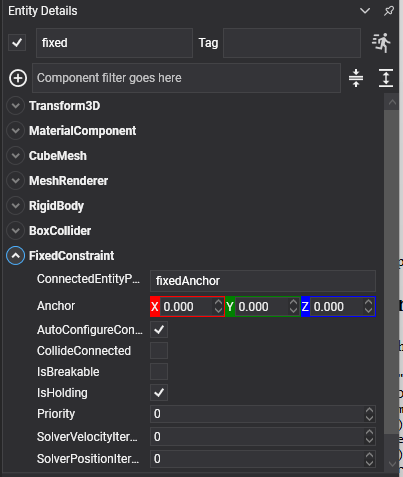

Fixed Constraint
A fixed constraint welds two bodies together: no relative movement and no relative rotation. They behave as one body until the weld gives way.
When to use it
If two things are permanently attached, the cheaper answer is usually one body with two colliders, a compound shape, since the solver then has nothing to solve at all.
A fixed constraint earns its place when the join has to be breakable, when the two halves need different physical properties, or when they are separate entities that come and go independently: a crate strapped to a pallet, a wing that can be torn off, a barrel welded to a truck bed until it is hit hard enough.
FixedConstraint Component

Entity load = new Entity("load")
.AddComponent(new Transform3D() { Position = new Vector3(0f, 1.5f, 0f) })
.AddComponent(new RigidBody())
.AddComponent(new BoxCollider())
.AddComponent(new FixedConstraint()
{
ConnectedEntityPath = "pallet",
// Welds break rather than bend, which is the reason to use one instead of a compound shape.
IsBreakable = true,
BreakForce = 4000f,
BreakTorque = 2500f,
});
this.Managers.EntityManager.Add(load);
Properties
A fixed constraint adds nothing of its own: it uses only the common properties. The two that matter most here are:
| Property | Default | Description |
|---|---|---|
| ConnectedEntityPath | null | The entity to weld to. Left empty, the body is welded to the world: pinned in place, unable to move or turn. |
| Anchor | 0,0,0 | Where the weld sits. It does not change what the constraint allows (nothing at all) but it is the point the breaking force is measured about. |
Tip
Welding a body to the world with an empty ConnectedEntityPath is a quick way to pin a dynamic body in place while keeping it dynamic, so it can still be broken loose, pushed once released, or have forces read off it.
Using Fixed Constraint
The weld gives way when it is loaded past its threshold:
public class Strap : Behavior
{
[BindComponent]
private FixedConstraint constraint = null;
protected override void OnActivated()
{
base.OnActivated();
this.constraint.Broken += this.OnBroken;
}
protected override void OnDeactivated()
{
base.OnDeactivated();
this.constraint.Broken -= this.OnBroken;
}
private void OnBroken(object sender, EventArgs e)
{
// Fires once. The bodies are already free by the time this runs, so there is nothing to undo,
// only something to react to.
this.PlaySnap();
}
}